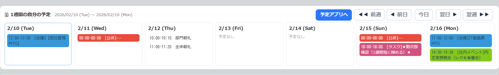
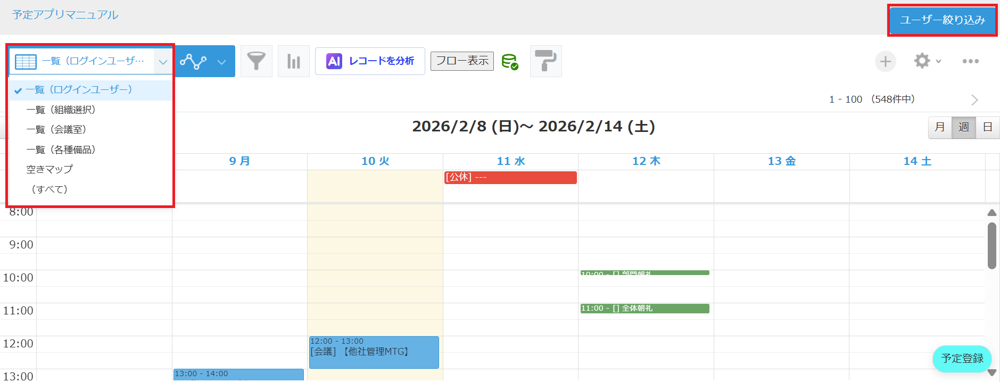
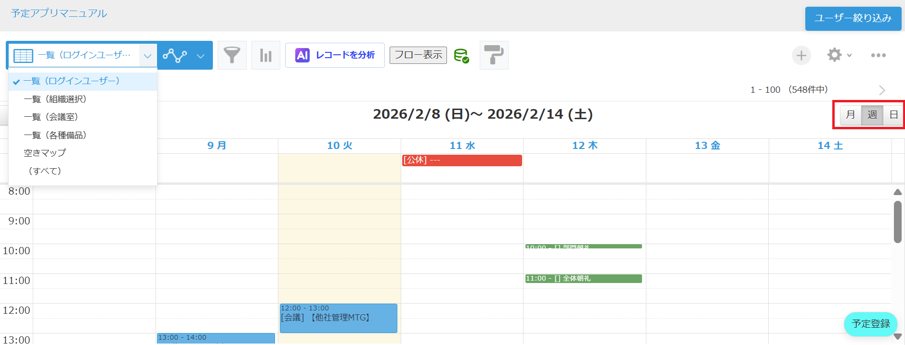
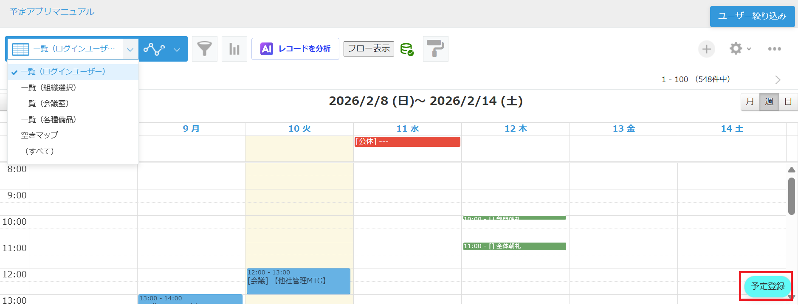
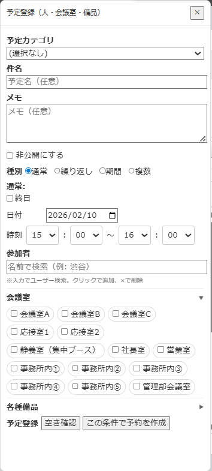

株式会社リアークスファインド
日付：2026/02/14
部署：IT推進課
氏名：伊藤
| 項目 | 内容 |
|---|---|
| 業務説明 | Kintoneを利用した社内予定の管理 |
| 目的 | 個人の予定およびグループの予定を可視化し、効率的なスケジュール調整を行う。 |
| ゴール | 全社員が正確に予定を登録・共有できている状態。 |
| 対象者 | 全社員 |
| 予定URL | https://rearx-find.cybozu.com/k/2760/ |
Kintoneトップ画面の「予定アプリ」ボタンからアクセス可能です。トップページには1週間分の予定が表示されます。

[図1: Kintone ホーム画面]

[図2: 予定管理一覧画面]
一覧画面では、以下の操作が可能です：
画面上部のタブから、月、週、日の各単位で表示を切り替えることができます。

[図3: 表示切り替え設定]
予定の登録には主に2つの方法があります：
画面右下にある「予定登録」ボタンをクリックします。ここから新規予定の作成を開始します。

[図4-1: ページ右下の予定登録ボタン]
詳細画面が表示されるので、必要な情報を入力します。
種別から「通常」「繰り返し」「期間」「複数」を選択することで、用途に合わせた登録が可能です。
〇通常
1件の予定を追加します。
〇繰り返し
開始日と終了日の範囲内で、繰り返し登録が可能です。
（毎日、平日のみ、毎週何曜日、毎月何日 などの指定ができます）
〇期間
期間内で終日の予定を追加します。
〇複数
複数日での予定を一括で登録します。
（隔週の予定などに適しています）
自分だけでなく、参加メンバーや設備（会議室・車両）の予約もここから一括で行えます。

[図4-2: 予定登録の詳細入力画面]
Q1. 予定が重複して登録できません。
A1. 参加者または設備が既に他の予定で使用されています。空き状況を確認し、別の時間帯を指定してください。
Q2. 予定を削除したいのですが。
A2. レコード自体を削除するのではなく、ステータスを「キャンセル」に変更して保存してください。
Q3. 他人の予定を編集することはできますか？
A3. 基本的には作成者または管理者のみが編集可能です。詳細はIT部門へお問い合わせください。
| 日付 | 改訂事項 | 担当 | 承認者 |
|---|---|---|---|
| 2025/09/15 | 新規作成（Ver1） | 生田目 | |
| 2026/02/14 | 内容の修正、参考情報の追加 (Ver3) | 伊藤 |